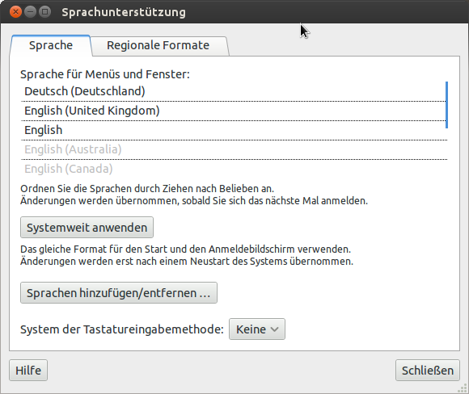

Desktop: germanified
Mon 21 November 2011 /
I use Ubuntu at work and at home - I've had no excuse not to do this so, first thing this morning, both environments were flipped over to German. Abgemacht, so zu sagen. All I have to do now is work out how the hell to find things I use all the time. And God forbid the sysadmin has to ever do anything to my machine in future ;)
